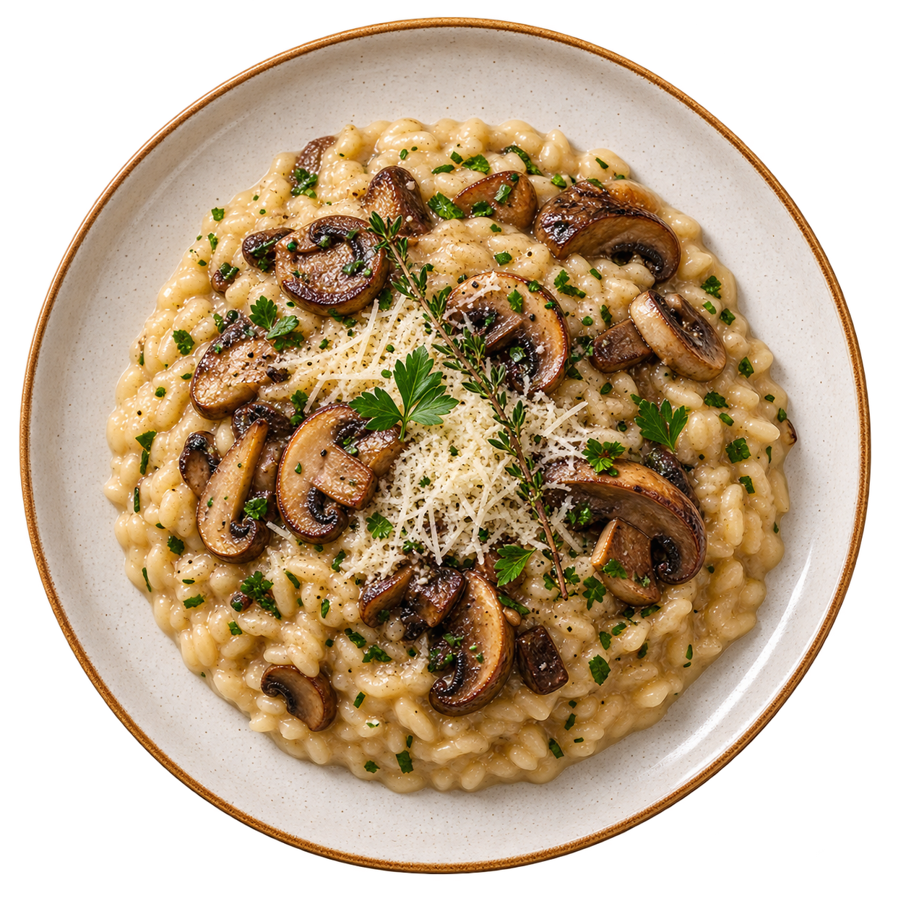

Risoto da Casa
Arroz arbóreo, cogumelos frescos, parmesão e ervas aromáticas.
R$ 48,00 Mais pedido
Cozinha artesanal, ingredientes frescos e receitas com afeto.

No Sabor da Casa, cada receita combina ingredientes locais e preparo artesanal, valorizando sabores autênticos e o cuidado em cada detalhe. Nosso compromisso é servir comida fresca e acolhedora, respeitando o tempo de cada ingrediente e buscando criar pratos que tragam conforto e sabor à mesa. Trabalhamos com produtos selecionados e receitas preparadas com atenção, para que cada refeição se transforme em uma experiência especial.
O menu foi criado pela chef Marina Lopes e muda conforme a estação, acompanhando a disponibilidade dos ingredientes e valorizando produtos frescos em cada época do ano. Cada prato é pensado para oferecer novas combinações de sabores, aromas e texturas, tornando cada visita uma experiência diferente e especial. Da nossa cozinha para a sua mesa.
Conheça alguns dos sabores mais pedidos da casa.
Arroz arbóreo, cogumelos frescos, parmesão e ervas aromáticas.
R$ 48,00 Mais pedido
Fettuccine artesanal com tomate-cereja, abobrinha, manjericão e molho da casa.
R$ 39,00 Vegetariano
Filé de frango grelhado, purê de batata, legumes e molho de mostarda.
R$ 42,00
Queijo artesanal, doce de leite e crocante de castanhas.
R$ 22,00 Prato do dia
| Dia | Almoço | Jantar |
|---|---|---|
| Segunda a quinta | às | às |
| Sexta-feira | às | às |
| Sábado | às | às |
| Domingo | às | Fechado |
| A cozinha encerra os pedidos 30 minutos antes do fechamento. | ||
Próximo jantar especial: .
Sim. Os pratos vegetarianos são identificados no cardápio com uma etiqueta própria.
Não é obrigatório, mas recomendamos reservar às sextas-feiras e aos sábados.
Sim. A entrada, o salão e o banheiro possuem estrutura acessível.
Preencha os campos abaixo. Os campos com * são obrigatórios.